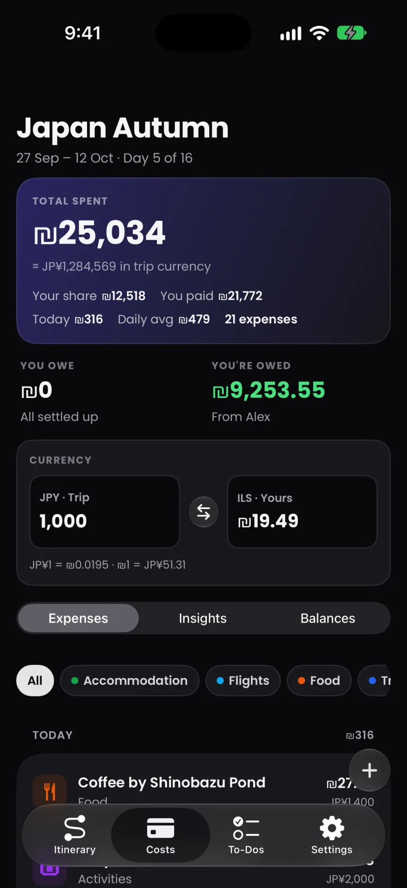
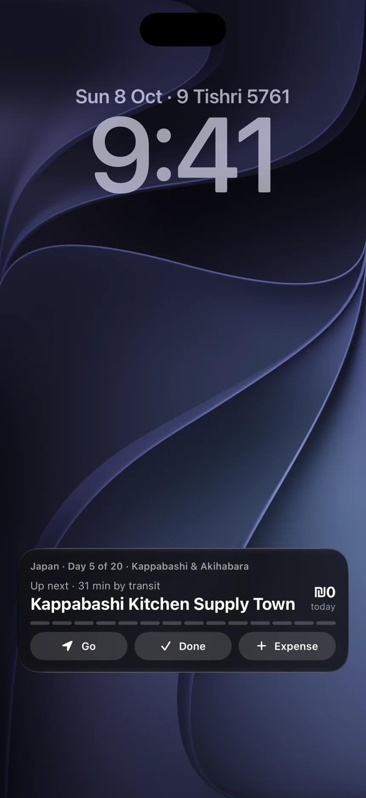
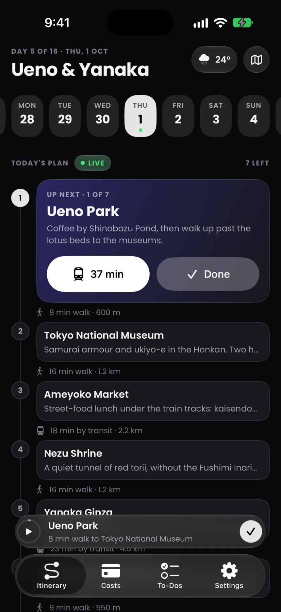
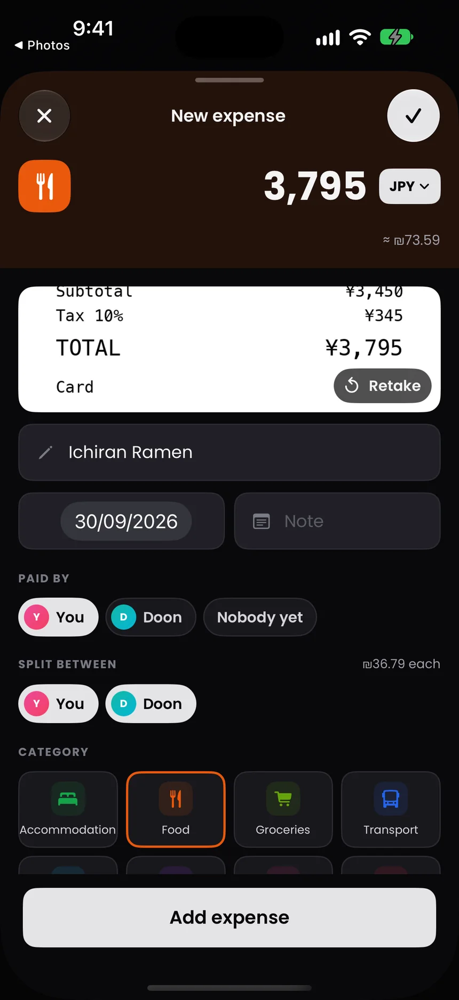
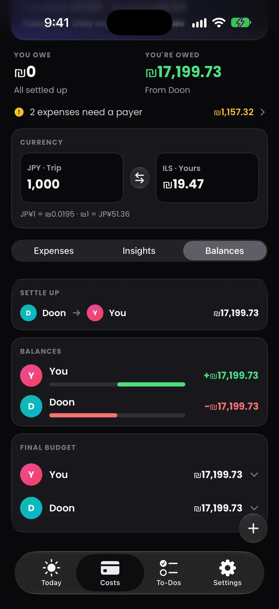
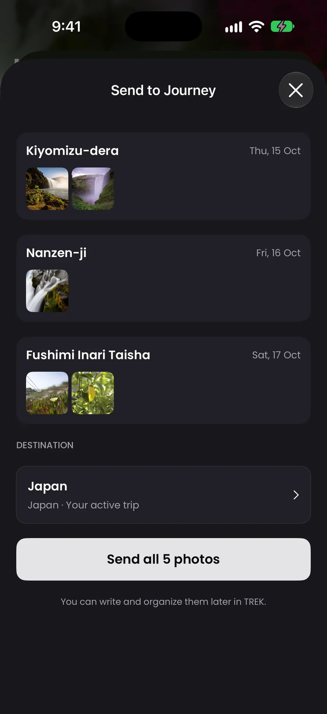
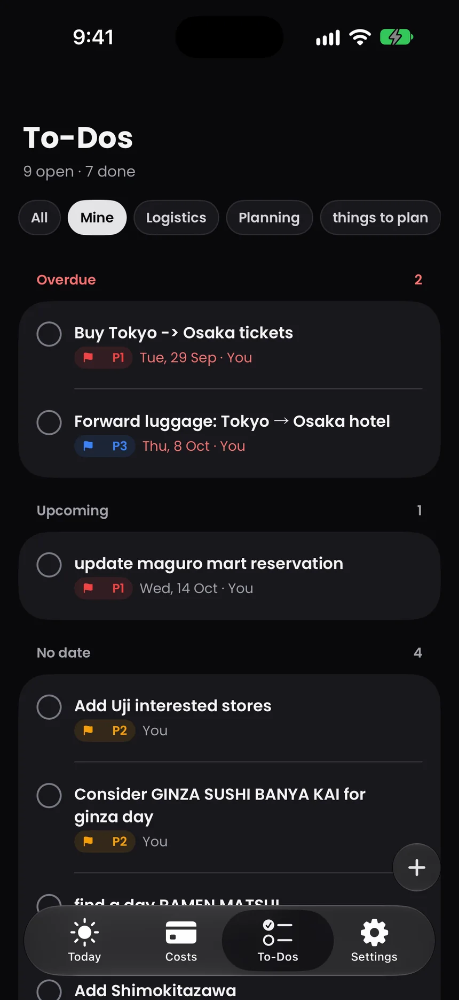

Up next, up top.
The next stop leads the day, notes and all. One tap for directions in Apple Maps, Google Maps or Waze. One tap to mark it done.



The whole day, stop by stop, with the walk in between.
Stay a while, and the stop is marked done on its own.
Type a price on the Home Screen. See what it costs you.
Scan a receipt. It fills itself in.

Who paid, who owes, and how to settle up.

Photos go straight to your Journey, sorted by stop.

The trip's to-dos, with due-date notifications.
